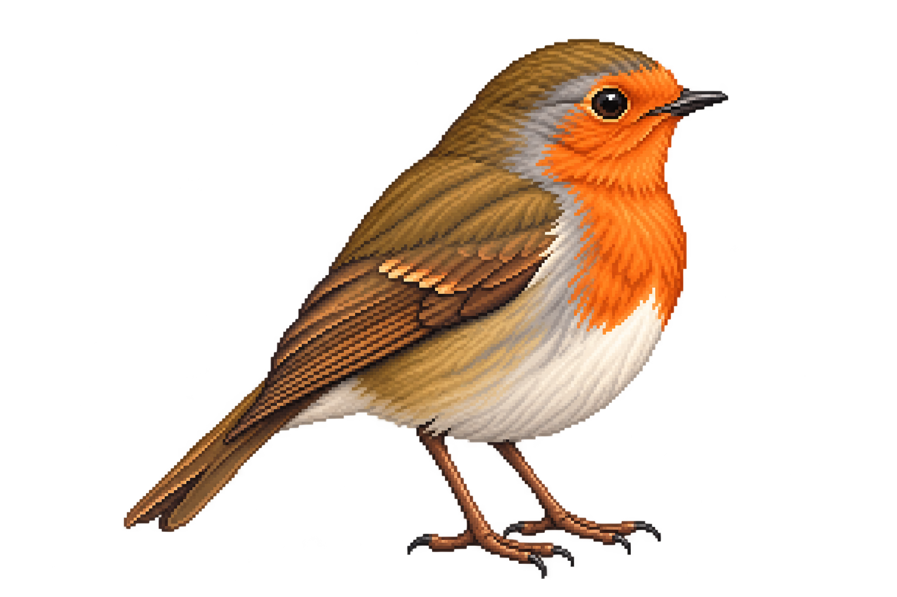
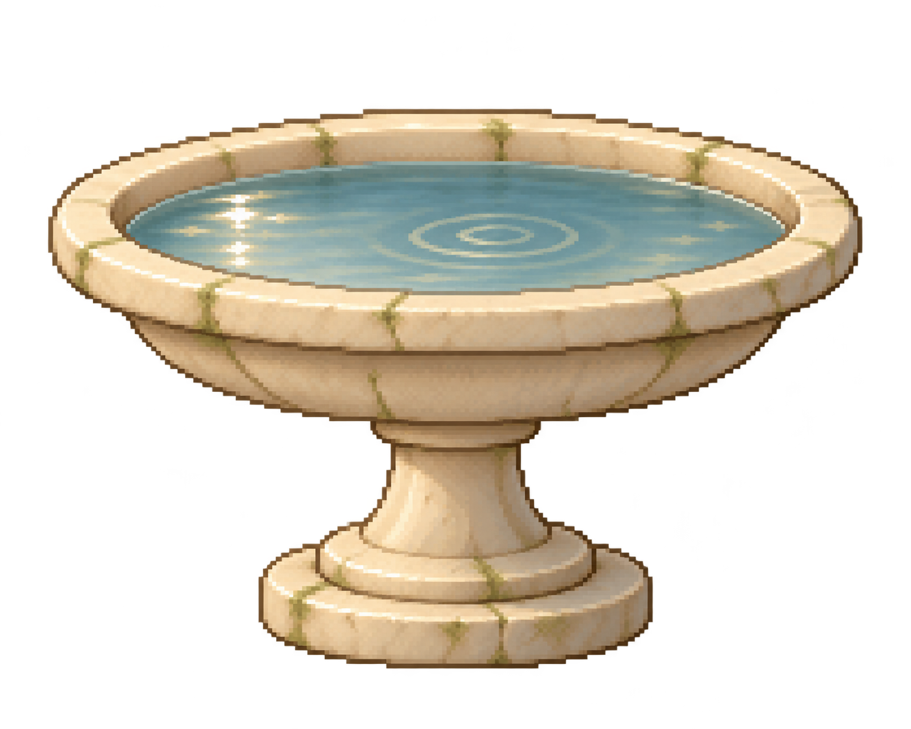
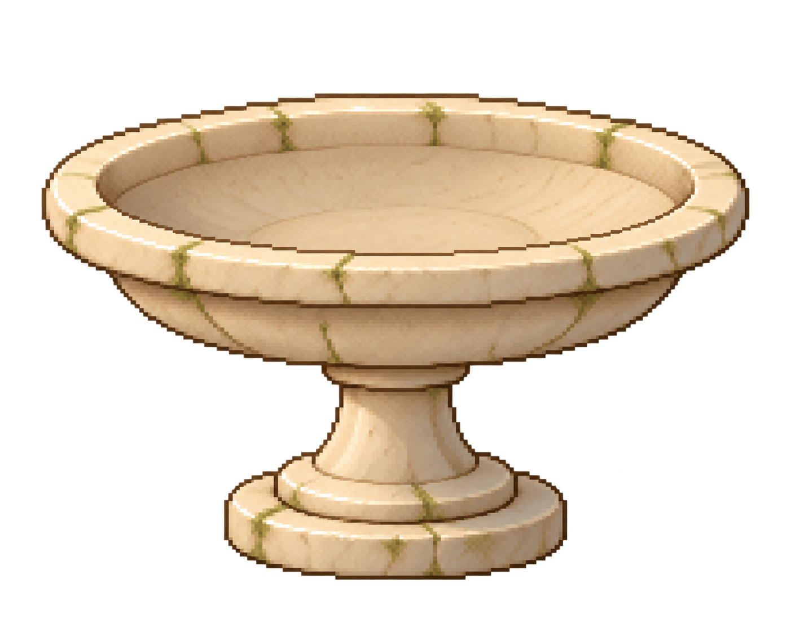
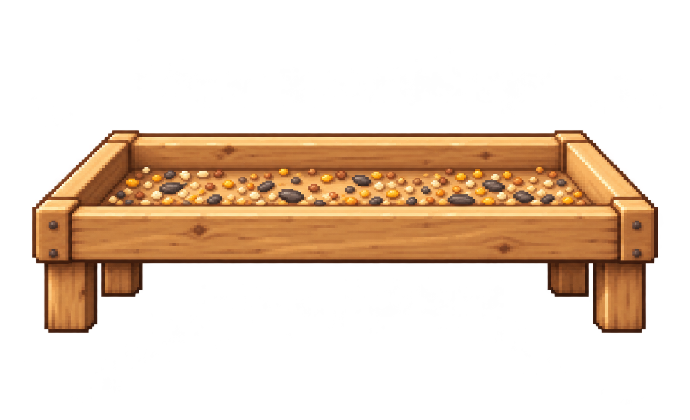
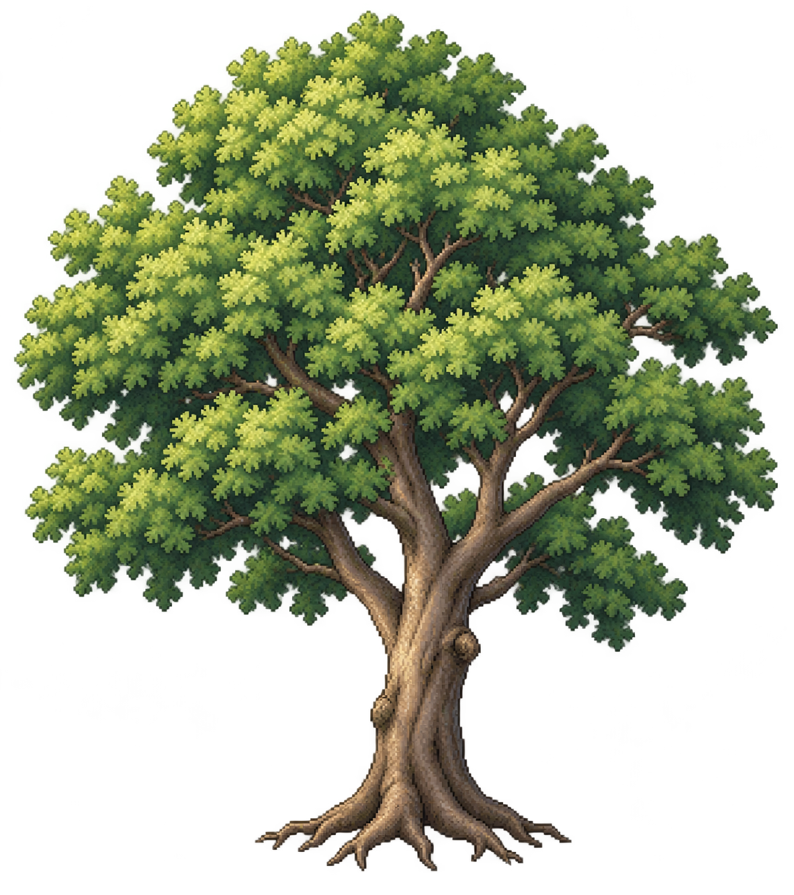
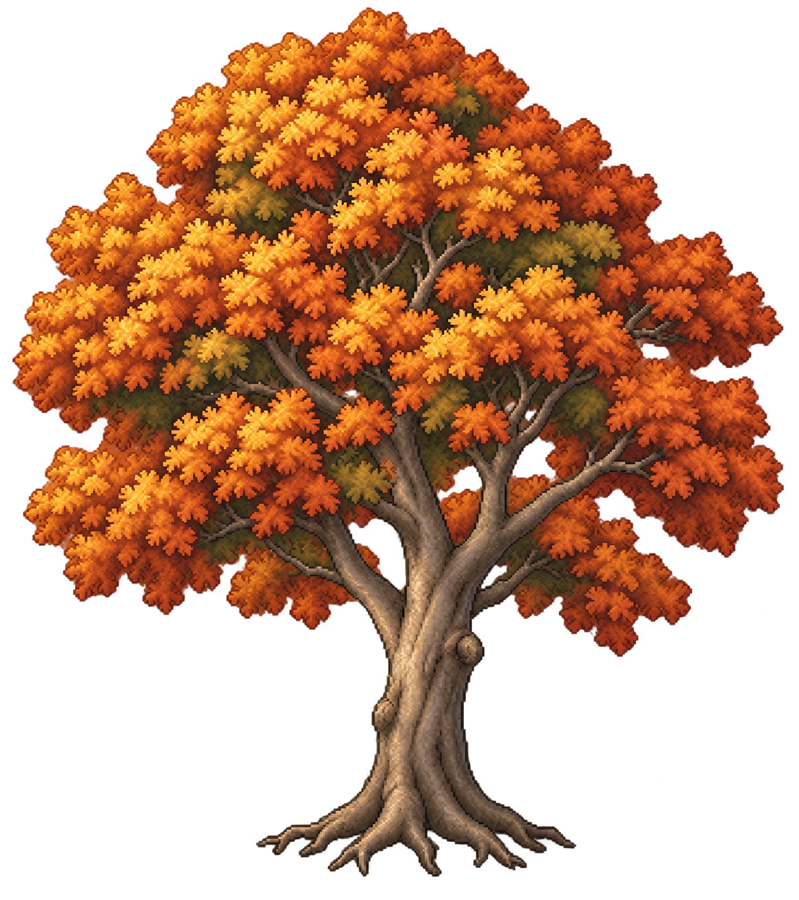

Standing robin candidate

European-robin-like; identity unverified
Unmodified image-generation masters. Large views above; proposed display frames on light and dark below.
Review only: alpha cleanup, pixel packing, pivots and runtime admission are not complete.

European-robin-like; identity unverified

Baked water; not a physics skin

Mask + support fitting pending

Catalog anchor fitting pending

Generic tree; no plant identity

Shared root/pivot review pending